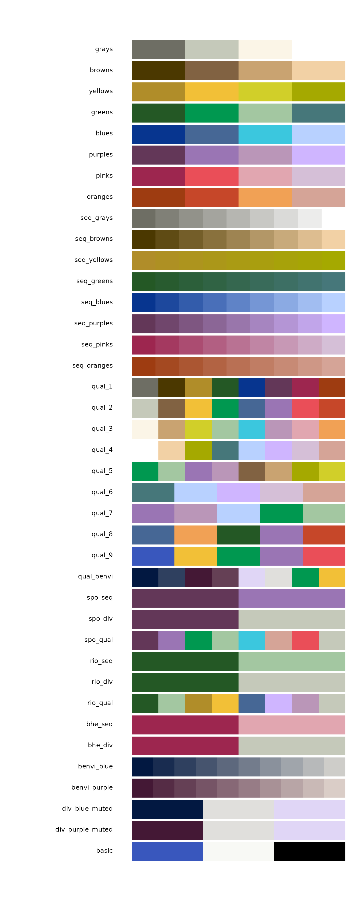

Introduction
benviplot provides color palettes and ggplot2 helper
functions for exploratory data analysis. The color schemes are based on
Benvi, a discontinued brand of the Brazilian proptech QuintoAndar. All
color information used here is publicly available and this project is
not affiliated with QuintoAndar.
Installation
# Install remotes if needed
if (!requireNamespace("remotes", quietly = TRUE)) {
install.packages("remotes")
}
remotes::install_github("viniciusoike/benviplot")Font Setup (Optional)
benviplot uses the Poppins font family
from Google Fonts. Installing it is optional —
theme_benvi() falls back to the system’s default sans-serif
font automatically.
library(benviplot)
# One-time installation (requires internet and the systemfonts package)
install_poppins()
# Check your current font and graphics device status
font_status()Quick Start
The core of the package is theme_benvi() combined with
the scale_*_benvi_*() functions.
ggplot(mtcars, aes(x = wt, y = mpg, fill = as.factor(cyl))) +
geom_point(shape = 21, size = 3, color = "#000000") +
scale_fill_benvi_d(name = "Cylinders", pal_name = "qual_8") +
labs(
title = "Fuel Efficiency vs. Weight",
x = "Weight (1000 lbs)",
y = "Miles per Gallon"
) +
theme_benvi()
Color Palettes
Browsing palettes
show_palettes() gives a visual overview of all available
palettes, modelled on
RColorBrewer::display.brewer.all().

You can filter by type: "theme",
"sequential", "qualitative",
"city", or "brand".
show_palettes("sequential")
Accessing palette colors
benvi_palette() returns a vector of hex codes. Print it
to preview the swatch.
# Preview a palette
benvi_palette("qual_2")
# Get hex codes as a plain character vector
as.character(benvi_palette("benvi_blue"))
#> [1] "#021841" "#192C50" "#2F405F" "#46546E" "#5D687D" "#737C8C" "#8A919C"
#> [8] "#A0A5AB" "#B7B9BA" "#CECDC9"Discrete palettes have 4–9 colors; use
type = "continuous" to interpolate any number.
benvi_palette("seq_greens", n = 20, type = "continuous")
Using ggplot2 Scales
Discrete scale
iqaiw_total <- subset(iqaiw, rooms == "Total")
ggplot(iqaiw_total, aes(x = date, y = index, color = name_muni)) +
geom_line(linewidth = 0.8) +
scale_color_benvi_d(pal_name = "qual_6", name = NULL) +
labs(
title = "IQAIW Rental Index by City",
x = NULL,
y = "Index (base = 100)"
) +
theme_benvi()
Continuous scale
spo_sales <- subset(sales_report, name_muni == "São Paulo" & date == max(date))
ggplot(spo_sales, aes(x = price_m2_listing, y = price_m2_contract,
color = price_m2_listing)) +
geom_point(size = 2) +
scale_color_benvi_c(pal_name = "benvi_blue", name = "Listing\n(R$/m²)") +
labs(
title = "Listing vs. Contract Prices — São Paulo",
x = "Listing price (R$/m²)",
y = "Contract price (R$/m²)"
) +
theme_benvi()
Plot Helper Functions
benviplot includes convenience wrappers for common chart
types. Each returns a ggplot2 object so additional layers
can be added normally.

Bar chart
sales <- data.frame(
cities = c("São Paulo", "Rio de Janeiro", "Belo Horizonte", "Porto Alegre", "Curitiba"),
revenue = c(125, 200, 150, 175, 80)
)
plot_column(sales, x = cities, y = revenue, text = TRUE)
Scatter plot
plot_scatter(
mtcars,
x = wt,
y = mpg,
variable = as.factor(cyl),
palette = "qual_8",
scale_name = "Cylinders"
)
Adding layers
Because helpers return ggplot2 objects, you can extend
them freely.
plot_line(economics, x = date, y = unemploy / 1000) +
geom_smooth(se = FALSE, color = benvi_palette("oranges")[3]) +
labs(
title = "US Unemployment with Smoothed Trend",
subtitle = "Unemployment figures in millions",
x = NULL,
y = "Unemployed (millions)",
caption = "Data: economics dataset"
)
Base R
benvi_palette() returns plain hex codes, so it works
with base R graphics too.
colors <- as.character(benvi_palette("purples"))
plot(
mtcars$wt, mtcars$mpg,
col = colors[mtcars$cyl / 2 - 1],
pch = 19,
cex = 1.5,
xlab = "Weight (1000 lbs)",
ylab = "Miles per Gallon",
main = "Using Benvi colors in base R"
)
Getting Help
-
Function documentation:
?benvi_palette,?theme_benvi,?scale_color_benvi_d - Package website: https://viniciusoike.github.io/benviplot/
- Report issues: https://github.com/viniciusoike/benviplot/issues